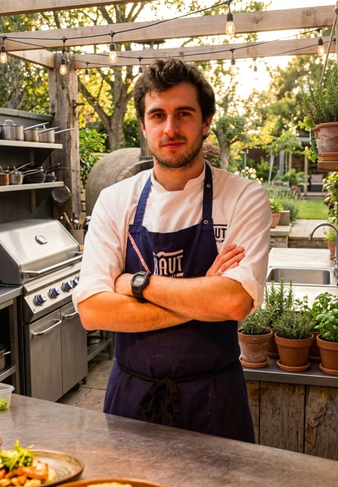

O Restaurante
Ôxi é como a gente diz
Aqui, cada prato é uma história contada com as mãos. Ingredientes que a terra dá, técnica que o mundo ensinou, e alma que só o Nordeste tem. No Ôxi, comer é um ato de pertencimento.
Conheça nossa história →
Descubra
O universo Ôxi

Semana a semana
O Cardápio
Criações sazonais escritas no quadro — porque a cozinha não pode ser estática.

A mente por trás
O Chef
Tomás Alencar — nordestino que viu o mundo e voltou pra casa com o que aprendeu.
Itacaré, Bahia
Nossa Terra
A mata atlântica, o Rio de Contas, o mar — tudo que está no prato começa aqui fora.
Permanências
Pratos que ficam

Baião de Dois
Contemporâneo
Moqueca de Caju
Assinatura
Bolo de Rolo Revisitado
SobremesaTOMÁS

Tomás, na cozinha do Ôxi
O Chef
Saí do Nordeste
Saí do Nordeste
pra aprender a voltar
Tomás Alencar cresceu em Juazeiro do Norte cheirando a coentro e rodeado de panelas de barro. Estudou em São Paulo, cozinhou em Lisboa e em Copenhagen. Mas foi só ao voltar pra Bahia que entendeu que a maior sofisticação já estava no seu quintal.
Conheça Tomás →
Imagens
A mesa, o espaço, o sabor


Itacaré, Bahia
A terra que
A terra que
alimenta a cozinha
Entre a mata atlântica e o oceano, Itacaré guarda produtores que cultivam com respeito ao tempo natural. Nossos ingredientes vêm de menos de 80km daqui.
Conhecer a Região →
Experiências
Mais do que jantar
Todo sábado · 10h
Aula de Tapioca Artesanal
Aprenda a fazer tapioca de verdade: da goma fresca ao recheio que você nunca imaginou. Com o Chef Tomás.
Saber mais →
Primeira sexta do mês
Jantar às Cegas Nordestino
Cinco pratos. Sem ver o prato. Só o paladar, o olfato e a memória afetiva para te guiar.
Saber mais →
Sob consulta
Cozinha Aberta com Tomás
Um dia ao lado do chef — da escolha dos ingredientes à finalização dos pratos. Para grupos de até 8 pessoas.
Saber mais →
Quem passou por aqui
O que dizem
Do Ôxi pra você
Ver todos →
Histórias da cozinha
Ingredientes
A Pimenta de Cheiro: rainha esquecida do Nordeste
Aromatizante, marcante, nordestina por excelência — a pimenta de cheiro merece mais do que um canto na feira.
Ler artigo →
Cultura
Macaxeira: o pão que a terra dá
Versátil, nutritiva e profundamente nordestina — a macaxeira é o tubérculo que alimentou gerações e merece mesas sofisticadas.
Ler artigo →
Entrevista
Tomás Alencar: a volta pra casa
"Cozinhar é um ato político", diz o chef que percorreu a Europa e voltou ao Nordeste para mostrar que o futuro está no passado.
Ler artigo →
Venha nos visitar
Reserve sua
Reserve sua
experiência
Abertos de terça a domingo. Almoço das 12h às 15h, jantar das 19h às 23h (até meia-noite nos fins de semana).